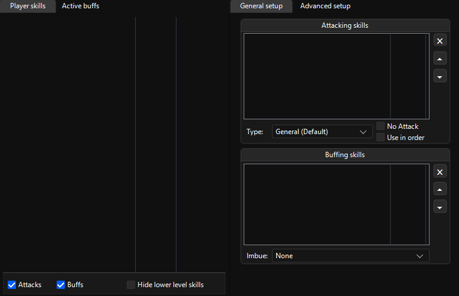
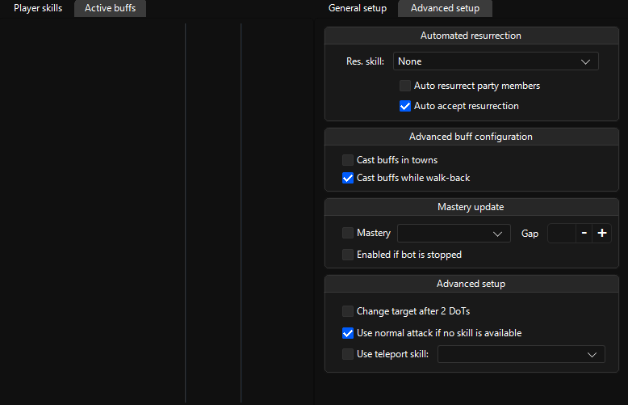

Skills
First subsections
{kind=link}
Player skills
Will list your skills and let you add them into
Attacking skills & Buffing skills with right click, use buffs on yourself or
others.
[!TIP] Use the bottom ticks to filter through your skills while configuring your training skills.
General setup
Will list the skills you’ve selected to train, buttons that can order the list or remove a skill and some behavior
[!TIP] General types’ skills will apply to all mob types that doesn’t have skills.
[!TIP] If your character is low on mana and has high mana abilitites, it’s recommended to put high mana skills to the top.
[!WARNING] Because the bot always attacks and if your mana pool is low, your character might not find the mana to recast things like “Holy Recovery Division”. A fix for this may be to not use too many skills that require high mana like “Healing Cycle” as it will constantly lower your mana because of it’s low cooldown.
Second subsections
{kind=link}
Active buffs
Will list your characters’ buffs.
Advanced setup
Contains:
- Automated resurrection & acception of resurrections
- Buff casting in towns and on walkscripts
- Mastery update
- Attack behavior modification
[!WARNING] Option
Change target after 2 DoTsdoesn’t work properly